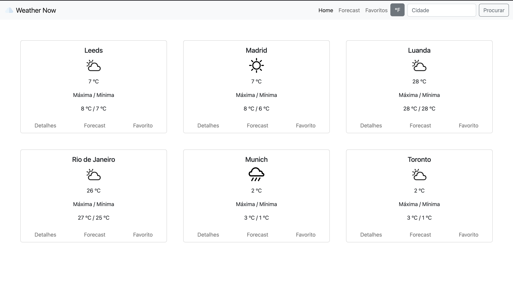
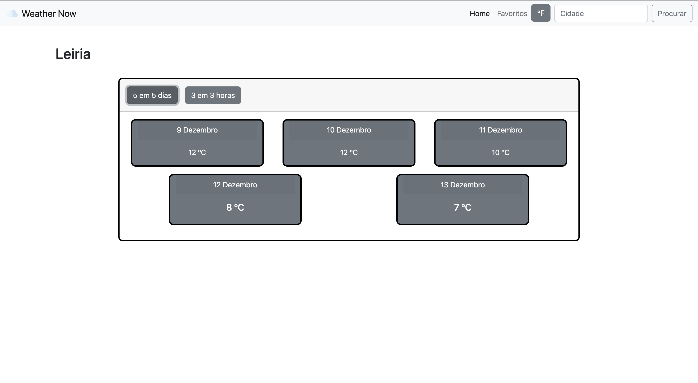
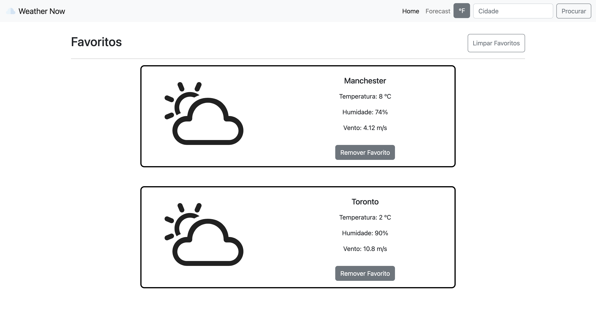

Weather Now
Descrição do projeto
O Weather Now é uma aplicação web projetada para fornecer previsões meteorológicas detalhadas, com uma interface limpa e intuitiva, acessível através de qualquer dispositivo moderno. O sistema permite que os usuários busquem informações sobre o clima em diversas cidades, visualizem as previsões em intervalos específicos e salvem suas cidades favoritas.
Objetivos do Projeto
- Fornecer previsões meteorológicas precisas para os usuários em tempo real.
- Permitir a personalização das unidades de medida (Celsius ou Fahrenheit).
- Facilitar a busca de cidades e a visualização das informações em uma plataforma moderna e responsiva.
Técnologias Utilizadas
- HTML5, CSS3 e JavaScript para a estrutura e comportamento da interface.
- Bootstrap 5 para garantir a responsividade e o layout moderno.
- API de previsão do tempo (OpenWeather).
Imagens do Projeto


